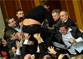

Главная новость
Все новости
22.06.14 - 7:24
Председатель парламента АлександрТурчинов обратился к людям,заблокировавшим улицу Грушевского, прямо из зала.
23.06.14 - 23:18
В ходе антитеррористической операции на Луганщине ликвидировано укрепление боевиков и взят мост через Северский...
23.06.14 - 23:40
Международные дипломаты дружно поддержали идею Путина.
25.06.14 - 8:40
Украинские военные отказались от более надежных бронежилетов ради подвижности.Эксперты считают это ошибкой.
26.06.14 - 23:49
Два блокпоста АТО возле Славянска боевики атаковали с применением «Града» и танков. Есть раненые /обновлено/.
24.06.14 - 0:20
Во Львове видного налоговика подвели его «волосатые руки».
Статьи

19.06.2014 - 17:37
Тенденции
Рада, пора на выход!
Седьмой парламентский созыв публично агонизирует. Хотя в Верховной Раде зарегистрирован законопроект о самороспуске,это вовсе не означает, что парламентарии спешат на досрочные выборы. ...
19.06.2014 - 8:41
Размышления
Сосед-агресор
В наш век развитых технологий простое человеческое общение вместо привычных живых встреч, и уж тем более бумажных писем, все более сводится к мобильной связи и социальным сетям. Легко и удобно. Если бы не одно НО. ...